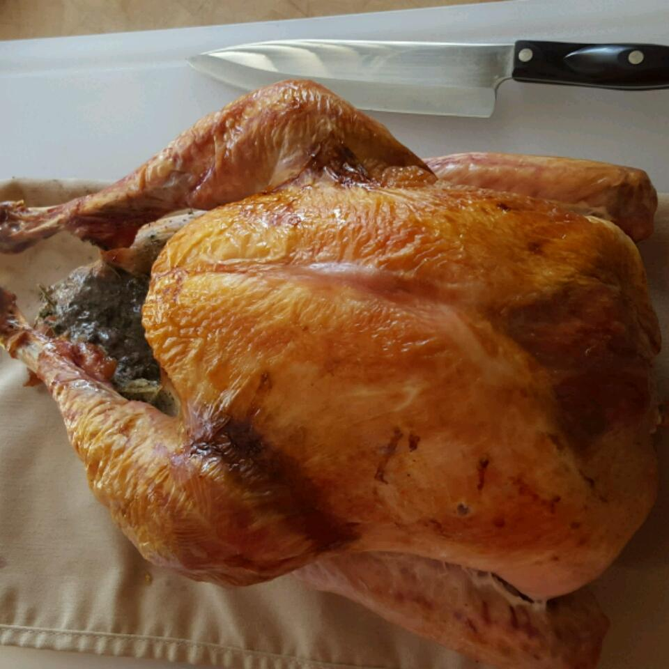

Juicy Thanksgiving Turkey

Description
My grandmother and mother passed this recipe on to me. It changes just a little every year, because we've never written it down before. But it is always incredibly juicy and succulent!
Ingredients
- 2 tablespoons dried parsley
- 2 tablespoons ground dried rosemary
- 2 tablespoons rubbed dried sage
- 2 tablespoons dried thyme leaves
- 1 tablespoon lemon pepper
- 1 tablespoon salt
- 1 (15 pound) whole turkey, neck and giblets removed
- 2 stalks celery, chopped
- 1 orange, cut into wedges
- 1 onion, chopped
- 1 carrot, chopped
- 1 (14.5 ounce) can chicken broth
- 1 (750 milliliter) bottle champagne
Steps
-
Preheat an oven to 350 degrees F (175 degrees C). Line a turkey roaster with long sheets of aluminum foil that will be long enough to wrap over the turkey.
-
Stir together the parsley, rosemary, sage, thyme, lemon pepper, and salt in a small bowl. Rub the herb mixture into the cavity of the turkey, then stuff with the celery, orange, onion, and carrot. Truss if desired, and place the turkey into the roasting pan. Pour the chicken broth and champagne over the turkey, making sure to get some champagne in the cavity. Bring the aluminum foil over the top of the turkey, and seal. Try to keep the foil from touching the skin of the turkey breast or legs.
-
Bake the turkey in the preheated oven for 2 1/2 to 3 hours until no longer pink at the bone and the juices run clear. Uncover the turkey, and continue baking until the skin turns golden brown, 30 minutes to 1 hour longer. An instant-read thermometer inserted into the thickest part of the thigh, near the bone should read 180 degrees F (82 degrees C). Remove the turkey from the oven, cover with a doubled sheet of aluminum foil, and allow to rest in a warm area 10 to 15 minutes before slicing.